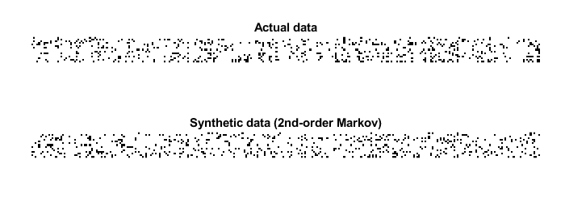

Contents
% maxent_example.m % % Example code for the maximum entropy toolkit % Ori Maoz, July 2016: orimaoz@gmail.com, % % Note: all the "maxent." prefixes before the function calls can be omitted by commenting out the following line: %import maxent.*
part 1: working with small distributions of neurons (exhaustively)
% load spiking data of 15 neurons load example15 % randomly divide it into a training set and a test set (so we can verify how well we trained) [ncells,nsamples] = size(spikes15); idx_train = randperm(nsamples,ceil(nsamples/2)); idx_test = setdiff(1:nsamples,idx_train); samples_train = spikes15(:,idx_train); samples_test = spikes15(:,idx_test); % create a k-pairwise model (pairwise maxent with synchrony constraints) model = maxent.createModel(ncells,'kising'); % train the model to a threshold of one standard deviation from the error of computing the marginals. % because the distribution is relatively small (15 dimensions) we can explicitly represent all 2^15 states % in memory and train the model in an exhaustive fashion. model = maxent.trainModel(model,samples_train,'threshold',1); % now check the kullback-leibler divergence between the model predictions and the pattern counts in the test-set empirical_distribution = maxent.getEmpiricalModel(samples_test); model_logprobs = maxent.getLogProbability(model,empirical_distribution.words); test_dkl = maxent.dkl(empirical_distribution.logprobs,model_logprobs); fprintf('Kullback-Leibler divergence from test set: %f\n',test_dkl); model_entropy = maxent.getEntropy(model); fprintf('Model entropy: %.03f empirical dataset entropy: %.03f\n', model_entropy, empirical_distribution.entropy); % get the marginals (firing rates and correlations) of the test data and see how they compare to the model predictions marginals_data = maxent.getEmpiricalMarginals(samples_test,model); marginals_model = maxent.getMarginals(model); % plot them on a log scale figure loglog(marginals_data,marginals_model,'b*'); hold on; minval = min([marginals_data(marginals_data>0)]); plot([minval 1],[minval 1],'-r'); % identity line xlabel('empirical marginal'); ylabel('predicted marginal'); title(sprintf('marginals in %d cells',ncells));
Training to threshold: 1.000 standard deviations Maximum MSE: 1.000 converged (marginals match) Standard deviations from marginals: 0.086 (mean), 0.983 (max) [9] DKL: 0.094 Kullback-Leibler divergence from test set: 0.107972 Model entropy: 6.462 empirical dataset entropy: 6.374

part 2: working with larger distributions of neurons (MCMC)
load example50 % randomly divide into train/test sets [ncells,nsamples] = size(spikes50); idx_train = randperm(nsamples,ceil(nsamples/2)); idx_test = setdiff(1:nsamples,idx_train); samples_train = spikes50(:,idx_train); samples_test = spikes50(:,idx_test); % create a pairwise maximum entropy model model = maxent.createModel(50,'pairwise'); % train the model to a threshold of 1.5 standard deviations from the error of computing the marginals. % because the distribution is larger (50 dimensions) we cannot explicitly iterate over all 5^20 states % in memory and will use markov chain monte carlo (MCMC) methods to obtain an approximation model = maxent.trainModel(model,samples_train,'threshold',1.5); % get the marginals (firing rates and correlations) of the test data and see how they compare to the model predictions. % here the model marginals could not be computed exactly so they will be estimated using monte-carlo. We specify the % number of samples we use so that their estimation will have the same amoutn noise as the empirical marginal values marginals_data = maxent.getEmpiricalMarginals(samples_test,model); marginals_model = maxent.getMarginals(model,'nsamples',size(samples_test,2)); % plot them on a log scale figure loglog(marginals_data,marginals_model,'b*'); hold on; minval = min([marginals_data(marginals_data>0)]); plot([minval 1],[minval 1],'-r'); % identity line xlabel('empirical marginal'); ylabel('predicted marginal'); title(sprintf('marginals in %d cells',ncells)); % the model that the MCMC solver returns is not normalized. If we want to compare the predicted and actual probabilities % of individual firing patterns, we will need to first normalize the model. We will use the wang-landau algorithm for % this. We chose parameters which are less strict than the default settings so that we will have a faster runtime. disp('Normalizing model...'); model = maxent.wangLandau(model,'binsize',0.1,'depth',15); % the normalization factor was added to the model structure. Now that we have a normalized model, we'll use it to % predict the frequency of activity patterns. We will start by observing all the patterns that repeated at least twice % (because a pattern that repeated at least once may grossly overrepresent its probability and is not meaningful in this % sort of analysis) limited_empirical_distribution = maxent.getEmpiricalModel(samples_test,'min_count',2); % get the model predictions for these patterns model_logprobs = maxent.getLogProbability(model,limited_empirical_distribution.words); % nplot on a log scale figure plot(limited_empirical_distribution.logprobs,model_logprobs,'bo'); hold on; minval = min(limited_empirical_distribution.logprobs); plot([minval 0],[minval 0],'-r'); % identity line xlabel('empirical pattern log frequency'); ylabel('predicted pattern log frequency'); title(sprintf('activity pattern frequency in %d cells',ncells)); % Wang-landau also approximated the model entropy, let's compare it to the entropy of the empirical dataset. % for this we want to look at the entire set, not just the set limited repeating patterns empirical_distribution = maxent.getEmpiricalModel(samples_test); % it will not be surprising to see that the empirical entropy is much lower than the model, this is because the % distribution is very undersampled fprintf('Model entropy: %.03f bits, empirical entropy (test set): %.03f bits\n',model.entropy,empirical_distribution.entropy); % generate samples from the distribution and compute their entropy. This should give a result which is must closer to % the entropy of the empirical distribution... samples_simulated = maxent.generateSamples(model,numel(idx_test)); simulated_empirical_distribution = maxent.getEmpiricalModel(samples_simulated); fprintf('Entropy of simulated data: %.03f bits\n',simulated_empirical_distribution.entropy);
Training to threshold: 1.500 standard deviations Maximum samples: 17778 maximum MSE: 3.375 358/Inf samples=5303 MSE=6.303 (mean), 51.959 (max) [30] 433/Inf samples=11239 MSE=3.682 (mean), 61.996 (max) [2] 476/Inf samples=17264 MSE=2.476 (mean), 30.393 (max) [2] 510/Inf samples=17778 MSE=1.781 (mean), 17.924 (max) [40] 544/Inf samples=17778 MSE=1.551 (mean), 20.760 (max) [12] 578/Inf samples=17778 MSE=1.647 (mean), 25.216 (max) [12] 613/Inf samples=17778 MSE=1.741 (mean), 14.063 (max) [12] 648/Inf samples=17778 MSE=2.006 (mean), 16.156 (max) [398] 682/Inf samples=17778 MSE=1.911 (mean), 12.694 (max) [1140] 716/Inf samples=17778 MSE=1.610 (mean), 9.755 (max) [1147] 751/Inf samples=17778 MSE=1.576 (mean), 6.116 (max) [529] 785/Inf samples=17778 MSE=1.592 (mean), 5.616 (max) [529] 819/Inf samples=17778 MSE=1.436 (mean), 8.364 (max) [12] 853/Inf samples=17778 MSE=1.364 (mean), 8.069 (max) [12] 887/Inf samples=17778 MSE=1.431 (mean), 5.663 (max) [731] 922/Inf samples=17778 MSE=1.437 (mean), 5.957 (max) [608] 957/Inf samples=17778 MSE=1.389 (mean), 5.231 (max) [142] 991/Inf samples=17778 MSE=1.384 (mean), 5.411 (max) [1151] 1025/Inf samples=17778 MSE=1.549 (mean), 4.749 (max) [1103] 1059/Inf samples=17778 MSE=1.481 (mean), 4.032 (max) [410] 1093/Inf samples=17778 MSE=1.511 (mean), 4.300 (max) [599] 1127/Inf samples=17778 MSE=1.430 (mean), 5.577 (max) [599] 1161/Inf samples=17778 MSE=1.310 (mean), 4.451 (max) [599] converged (marginals match) Normalizing model... [...............] Model entropy: 17.509 bits, empirical entropy (test set): 11.993 bits Entropy of simulated data: 12.472 bits


part 3: specifying a custom list of correlations
% load spiking data of 15 neurons load example15 % randomly divide it into a training set and a test set (so we can verify how well we trained) [ncells,nsamples] = size(spikes15); idx_train = randperm(nsamples,ceil(nsamples/2)); idx_test = setdiff(1:nsamples,idx_train); samples_train = spikes15(:,idx_train); samples_test = spikes15(:,idx_test); % create a model with first, second, and third-order correlations. (third-order model) % we will do this by specifying a list of all the possible combinations of single factors, pairs and triplets correlations = cat(1,num2cell(nchoosek(1:ncells,1),2), ... num2cell(nchoosek(1:ncells,2),2),... num2cell(nchoosek(1:ncells,3),2)); model = maxent.createModel(ncells,'highorder',correlations); % train it model = maxent.trainModel(model,samples_train,'threshold',1); % use the model to predict the frequency of activity patterns. % We will start by observing all the patterns that repeated at least twice (because a pattern that repeated at least % once may grossly overrepresent its probability and is not meaningful in this sort of analysis) limited_empirical_distribution = maxent.getEmpiricalModel(samples_test,'min_count',2); % get the model predictions for these patterns model_logprobs = maxent.getLogProbability(model,limited_empirical_distribution.words); % nplot on a log scale figure plot(limited_empirical_distribution.logprobs,model_logprobs,'bo'); hold on; minval = min(limited_empirical_distribution.logprobs); plot([minval 0],[minval 0],'-r'); % identity line xlabel('empirical pattern log frequency'); ylabel('predicted pattern log frequency'); title(sprintf('Third order model: activity patterns in %d cells',ncells));
Training to threshold: 1.000 standard deviations Maximum MSE: 1.000 23/Inf MSE=5.297 (mean), 1150.729 (max) [12] DKL: 0.324 49/Inf MSE=1.303 (mean), 21.290 (max) [108] DKL: 0.152 75/Inf MSE=0.677 (mean), 15.530 (max) [32] DKL: 0.116 101/Inf MSE=0.337 (mean), 9.809 (max) [2] DKL: 0.099 127/Inf MSE=0.145 (mean), 9.456 (max) [239] DKL: 0.092 153/Inf MSE=0.108 (mean), 9.260 (max) [12] DKL: 0.088 179/Inf MSE=0.071 (mean), 4.781 (max) [239] DKL: 0.085 205/Inf MSE=0.050 (mean), 2.981 (max) [239] DKL: 0.084 231/Inf MSE=0.033 (mean), 3.708 (max) [351] DKL: 0.082 257/Inf MSE=0.029 (mean), 4.986 (max) [351] DKL: 0.081 283/Inf MSE=0.021 (mean), 2.523 (max) [351] DKL: 0.081 309/Inf MSE=0.014 (mean), 1.148 (max) [351] DKL: 0.080 converged (marginals match) Standard deviations from marginals: 0.114 (mean), 0.995 (max) [351] DKL: 0.080

part 4: constructing composite models
% load spiking data of 15 neurons load example15 % randomly divide it into a training set and a test set (so we can verify how well we trained) [ncells,nsamples] = size(spikes15); idx_train = randperm(nsamples,ceil(nsamples/2)); idx_test = setdiff(1:nsamples,idx_train); samples_train = spikes15(:,idx_train); samples_test = spikes15(:,idx_test); % create a model with independent factors, k-synchrony and third-order correlations % we will do this by initializing 3 separate models and then combining them to a single model third_order_correlations = num2cell(nchoosek(1:ncells,3),2); model_indep = maxent.createModel(ncells,'indep'); model_ksync = maxent.createModel(ncells,'ksync'); model_thirdorder = maxent.createModel(ncells,'highorder',third_order_correlations); model = maxent.createModel(ncells,'composite',{model_indep,model_ksync,model_thirdorder}); % train it model = maxent.trainModel(model,samples_train,'threshold',1); % use the model to predict the frequency of activity patterns. % We will start by observing all the patterns that repeated at least twice (because a pattern that repeated at least % once may grossly overrepresent its probability and is not meaningful in this sort of analysis) limited_empirical_distribution = maxent.getEmpiricalModel(samples_test,'min_count',2); % get the model predictions for these patterns model_logprobs = maxent.getLogProbability(model,limited_empirical_distribution.words); % nplot on a log scale figure plot(limited_empirical_distribution.logprobs,model_logprobs,'bo'); hold on; minval = min(limited_empirical_distribution.logprobs); plot([minval 0],[minval 0],'-r'); % identity line xlabel('empirical pattern log frequency'); ylabel('predicted pattern log frequency'); title(sprintf('Composite model: activity patterns in %d cells',ncells));
Training to threshold: 1.000 standard deviations Maximum MSE: 1.000 28/Inf MSE=0.567 (mean), 22.211 (max) [12] DKL: 0.121 58/Inf MSE=0.193 (mean), 4.342 (max) [146] DKL: 0.109 88/Inf MSE=0.073 (mean), 3.253 (max) [23] DKL: 0.104 118/Inf MSE=0.038 (mean), 3.465 (max) [296] DKL: 0.101 148/Inf MSE=0.027 (mean), 5.127 (max) [24] DKL: 0.100 178/Inf MSE=0.018 (mean), 4.573 (max) [24] DKL: 0.098 208/Inf MSE=0.012 (mean), 1.189 (max) [24] DKL: 0.097 238/Inf MSE=0.007 (mean), 1.069 (max) [130] DKL: 0.097 268/Inf MSE=0.006 (mean), 1.035 (max) [130] DKL: 0.096 converged (marginals match) Standard deviations from marginals: 0.071 (mean), 0.998 (max) [130] DKL: 0.096

part 5: constructing and sampling from high order Markov chains
train a time-dependent model
% load spiking data of 15 neurons load example15_spatiotemporal ncells = size(spikes15_time_dependent,1); history_length = 2; % Create joint words of (x_t-2,x_t-1,x_t). xt = []; for i = 1:(history_length+1) xt = [xt;spikes15_time_dependent(:,i:(end-history_length-1+i))]; end % create a spatiotemporal model that works on series of binary words: (x_t-2,x_t-1,x_t). % this essentially describes the probability distribution as a second-order Markov process. % We will model the distribution with a composite model that uses firing rates, total synchrony in the last 3 time bins % and pairwise correlations within the current time bin and pairwise correlations between the current activity of a cell % and the previous time bin. time_dependent_ncells = ncells*(history_length+1); inner_model_indep = maxent.createModel(time_dependent_ncells,'indep'); % firing rates inner_model_ksync = maxent.createModel(time_dependent_ncells,'ksync'); % total synchrony in the population % add pairwise correlations only within the current time bin second_order_correlations = num2cell(nchoosek(1:ncells,2),2); temporal_matrix = reshape(1:time_dependent_ncells,[ncells,history_length+1]); temporal_interactions = []; % add pairwise correlations from the current time bin to the previous time step for i = 1:(history_length) temporal_interactions = [temporal_interactions;temporal_matrix(:,[i,i+1])]; end % bunch of all this together into one probabilistic model temporal_interactions = num2cell(temporal_interactions,2); inner_model_pairwise = maxent.createModel(time_dependent_ncells,'highorder',[second_order_correlations;temporal_interactions]); mspatiotemporal = maxent.createModel(time_dependent_ncells,'composite',{inner_model_indep,inner_model_ksync,inner_model_pairwise}); % train the model on the concatenated words disp('training spatio-temporal model...'); mspatiotemporal = maxent.trainModel(mspatiotemporal,xt); % sample from the model by generating each sample according to the history. % for this we need to generate the 3n-dimensional samples one by one, each time fixing two-thirds of the code word % corresponding to time t-2 and t-1 and sampling only from time t. disp('sampling from spatio-temporal model...'); x0 = uint32(xt(:,1)); xspatiotemporal = []; nsamples = 10000; for i = 1:nsamples % get next sample. we will use burn-in of 100 each step to ensure that we don't introduce time-dependent stuff % related to the sampling process itself. xnext = maxent.generateSamples(mspatiotemporal,1,'fix_indices',1:(ncells*history_length),'burnin',100,'x0',x0); generated_sample = xnext(((ncells*history_length)+1):end,1); % shift the "current" state by one time step x0 = [x0((ncells+1):end,:);generated_sample]; % add the current output xspatiotemporal = [xspatiotemporal,generated_sample]; end % plot the result display_begin = 2000; nsamples_to_display = 300; % plot the actual raster pos = [400,600,700,250]; figure('Position',pos); subplot(2,1,1); pos = get(gca, 'Position');pos(1) = 0.055;pos(3) = 0.9;set(gca, 'Position', pos); imshow(~spikes15_time_dependent(:,display_begin+(1:nsamples_to_display))); title('Actual data'); % plot raster sampled from a spatiotemporal model subplot(2,1,2); pos = get(gca, 'Position');pos(1) = 0.055;pos(3) = 0.9;set(gca, 'Position', pos); imshow(~xspatiotemporal(:,display_begin+(1:nsamples_to_display))); title('Synthetic data (2nd-order Markov)');
training spatio-temporal model... Training to threshold: 1.300 standard deviations Maximum samples: 47335 maximum MSE: 2.535 288/Inf samples=2617 MSE=18.074 (mean), 83.959 (max) [66] 360/Inf samples=5411 MSE=9.253 (mean), 27.411 (max) [220] 402/Inf samples=8245 MSE=6.186 (mean), 18.759 (max) [26] 432/Inf samples=11127 MSE=4.611 (mean), 14.916 (max) [222] 455/Inf samples=14000 MSE=3.577 (mean), 10.179 (max) [222] 474/Inf samples=16923 MSE=2.993 (mean), 10.225 (max) [60] 490/Inf samples=19851 MSE=2.540 (mean), 7.836 (max) [101] 504/Inf samples=22824 MSE=2.259 (mean), 6.930 (max) [60] 516/Inf samples=25725 MSE=2.022 (mean), 5.725 (max) [60] 527/Inf samples=28707 MSE=1.837 (mean), 5.335 (max) [212] 537/Inf samples=31713 MSE=1.692 (mean), 6.279 (max) [212] 546/Inf samples=34690 MSE=1.564 (mean), 7.661 (max) [212] 554/Inf samples=37567 MSE=1.452 (mean), 7.561 (max) [212] 562/Inf samples=40683 MSE=1.329 (mean), 7.513 (max) [212] 569/Inf samples=43621 MSE=1.292 (mean), 7.194 (max) [212] 576/Inf samples=46771 MSE=1.211 (mean), 6.902 (max) [212] 583/Inf samples=47335 MSE=1.131 (mean), 6.242 (max) [212] 590/Inf samples=47335 MSE=1.064 (mean), 5.374 (max) [212] 597/Inf samples=47335 MSE=1.010 (mean), 4.054 (max) [212] 604/Inf samples=47335 MSE=0.975 (mean), 3.296 (max) [212] 611/Inf samples=47335 MSE=0.957 (mean), 2.466 (max) [212] converged (marginals match) sampling from spatio-temporal model...